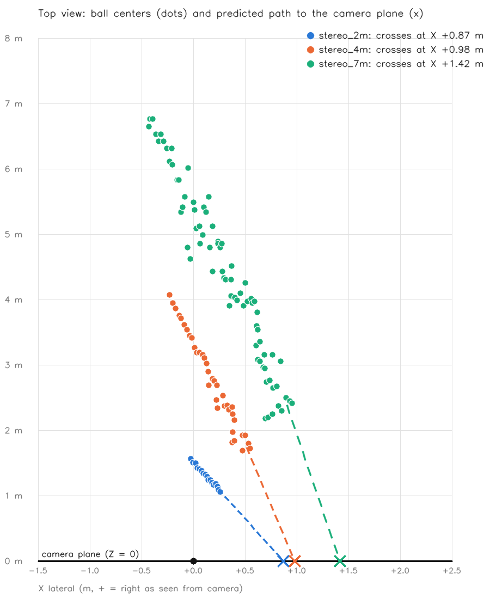

The same 2026-10-06 stereo kicks, re-run through the sped-up pipeline (commit 4927fce): fixed-camera motion mask at half resolution, ring-only edge gradients, classifier last, both eyes in parallel, downscaled large-radius acquisition search, and stereo pairs rejected when the eyes disagree on height. Left eye on the left, right eye on the right. Compare with the 2026-10-06 review (previous pipeline).
Green measured track, yellow brief-gap prediction, white detection, dashed blue estimated floor boundary. The "Pair … ms" label is laptop replay time, not Pi time.
Open overlay video · Tracking data
| Clip | Frames | Ball confirmed L / R | Both eyes |
|---|---|---|---|
| 2 m | 145 | 35 / 34 | 24 (frames 43–66) |
| 4 m | 203 | 44 / 49 | 42 (frames 51–92) |
| 7 m | 416 | 98 / 102 | 80 (frames 66–145, plus one false pair at 313 that triangulation rejects) |
Previous pipeline: both eyes 25 / 43 / 77 pairs. Against the old tracks frame by frame, 98–99% of the detections both pipelines made land on the same spot.
Same provisional calibration (calibration/stereo.json) and predictor as 2026-10-06 (full timeline).

| Clip | Predicted crossing X | Ball speed | Crossing after last frame | Check error* (first 0.2 s / 0.2–0.5 s / later) |
|---|---|---|---|---|
| 2 m | +0.87 ± 0.02 m (right) | 2.1 m/s | 0.58 s | 1 / 1 cm |
| 4 m | +0.98 ± 0.02 m (right) | 4.1 m/s | 0.39 s | 1 / 3 / 4 cm |
| 7 m | +1.42 ± 0.04 m (right) | 3.7 m/s | 0.61 s | 25 / 14 / 6 cm |
*Each prediction, made with only the frames seen so far, is extrapolated to the last observed depth and compared with where the ball actually was. Previous pipeline crossings: +0.88 / +0.98 / +1.37 m.